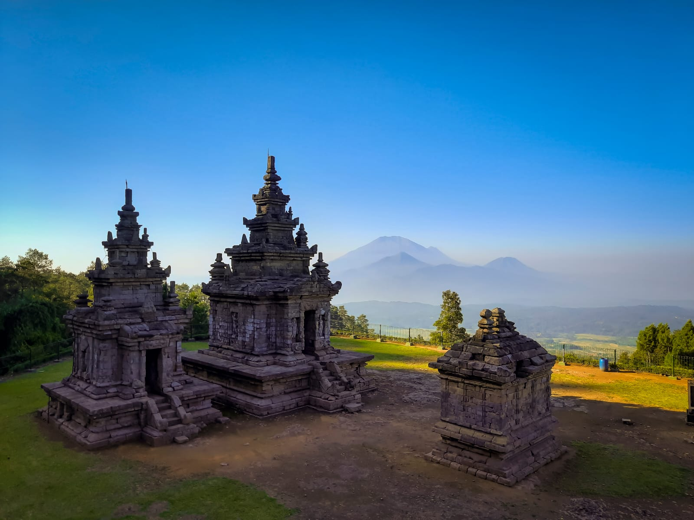
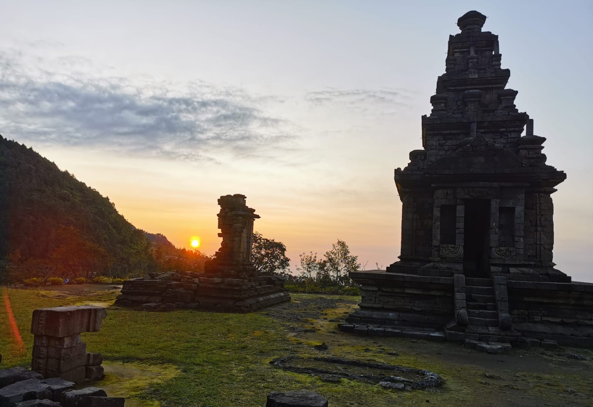
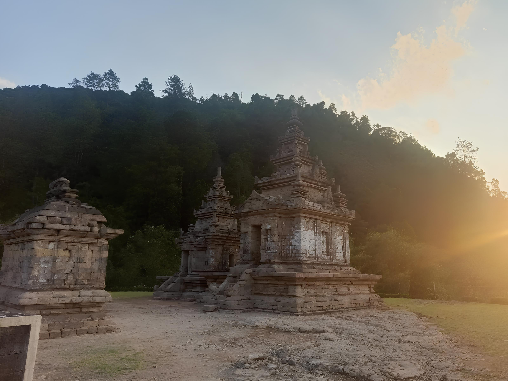

Desa Candi
Tentang Desa
Candi adalah sebuah desa di kecamatan Bandungan, Semarang, Jawa Tengah, Indonesia. Jarak desa ini dari ibu kota kecamatan adalah sekitar 2 km. Desa Candi memiliki sebuah tempat wisata andalan Kabupaten Semarang, yaitu Candi Gedong Songo.
Selain itu, Desa Candi juga menawarkan destinasi wisata lain seperti Taman Bunga Celosia, yang menyediakan berbagai hiburan dan spot foto menarik. Udara sejuk dengan suhu berkisar antara 20-29 derajat Celsius yang menambah kenyamanan bagi para pengunjung.
Sejarah Singkat Desa
Desa Candi di Kecamatan Bandungan, Kabupaten Semarang, memiliki sejarah yang berkaitan dengan Kerajaan Kalingga yang dipimpin oleh Ratu Shima, seorang ratu yang terkenal adil dan bijaksana. Ia mengajarkan rakyatnya untuk hidup jujur, ikhlas, taqwa, dan ulet. Demi meninggalkan warisan bagi generasi mendatang, Ratu Shima memerintahkan pembangunan candi sebagai tempat ibadah yang mendekati Suralaya, tempat para dewa bersemayam.
Dua Mpu sakti, Ki Hajar Selakantara dan Ki Hajar Watangrana, dipanggil untuk menjalankan tugas tersebut. Bersama Roro Komariyah dan para prajurit pilihan, mereka berjalan selama empat puluh hari hingga menemukan lokasi yang dianggap sesuai. Namun, terjadi perbedaan pendapat. Ki Hajar Watangrana merasa lokasi tersebut masih jauh dari Suralaya dan memilih tempat lain di utara, sedangkan Ki Hajar Selakantara bersikeras tetap di lokasi awal.
Perselisihan ini menyebabkan perpecahan di antara para pengikut mereka dan berujung pada pertempuran. Ki Hajar Watangrana akhirnya membangun candi di lokasi pilihannya. Sementara itu, Ki Hajar Selakantara meninggalkan candi yang belum selesai dan berujar bahwa kelak tempat ini akan dikenal sebagai Desa Candi.
Kebudayaan

1. Nyadran
Pengertian: Tradisi ziarah dan membersihkan makam leluhur.
Kegunaan: Bentuk penghormatan kepada leluhur dan doa bersama.
Pelaksanaan: Biasanya menjelang Ramadan.

2. Merti Dusun / Bersih Dusun
Pengertian: Ritual membersihkan desa sebagai ungkapan syukur.
Kegunaan: Memohon berkah dan keselamatan bagi warga desa.
Pelaksanaan: Biasanya setahun sekali, tergantung adat setempat.

3. Reog
Pengertian: Pertunjukan seni tradisional dengan unsur magis dan kekuatan fisik.
Kegunaan: Hiburan rakyat, pelestarian budaya, dan bagian dari upacara adat.
Pelaksanaan: Hajatan warga atau berbagai acara.
Potensi Desa
1. Sumber Daya Alam
Desa Candi memiliki kelerengan landai yaitu 8 – 15% yang berpotensi untuk dijadikan sebagai tempat perdagangan karena dilalui oleh jalan utama yang menghubungkan Kecamatan Bandungan dengan kecamatan sekitar. Banyaknya kendaraan bisa dimanfaatkan penduduk untuk berjualan di sepanjang jalan utama tersebut.
Tanah di Desa Candi terdiri dari Andosol Coklat Tua dan Latosol Coklat Tua yang bersifat asam dan memiliki produktivitas tinggi, didukung curah hujan 2500–3000 mm/tahun. Desa ini sangat cocok untuk lahan pertanian seperti padi dan perkebunan seperti tembakau.
2. Sumber Daya Manusia
Jumlah penduduk 7.355 jiwa (3.685 laki-laki dan 3.670 perempuan), mayoritas pada rentang usia produktif. Pekerjaan didominasi oleh sektor pertanian/perkebunan. Agama mayoritas adalah Islam, disusul Katolik dan Kristen, sehingga banyak terdapat masjid dan mushola.
3. Ekonomi
Sebagian besar masyarakat Desa Candi bekerja sebagai petani/pekebun karena tanah yang subur dan iklim yang mendukung. Selain itu, objek wisata Candi Gedong Songo menjadi sumber pendapatan lain bagi desa melalui sektor pariwisata.